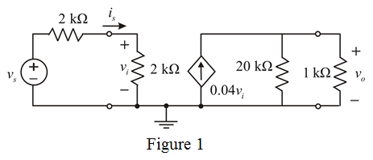

Calculate the input voltage.
 …… (1)
…… (1)
Draw the trans-conductance amplifier.

Calculate the input voltage.
…… (1)
Calculate the output voltage.
Substitute for  in the equation.
in the equation.
Substitute  for
for  , for
, for  and for
and for  in the equation.
in the equation.
Therefore, the overall voltage gain is .